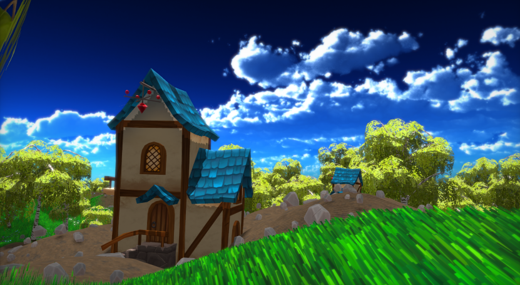
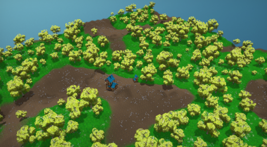
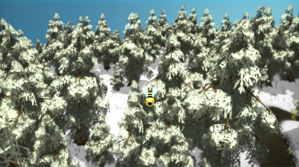
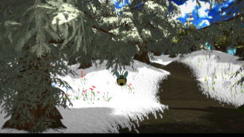

Blossom
Blossom is an engine that tailors to procedurally build a 3D natural environment. The engine prioritizes organically placed vegetation and stylized graphic fidelity. With a built-in noise editor, a complete environment can be made from scratch all from within the engine.
Procedural scene building
Scene exploration
-
Team Size:
5 programmers
-
Time Bounds:
2 months
-
My role:
Graphics Programmer (focus on PS5)
My Contribution:
- Design and implementation of cross-platform rendering API
- Tessellation for terrain rendering on both platforms (PS5 AGC and OpenGL)
- Shadow-mapping on PS5
- Procedural grass generation and instanced (chunk) rendering on PS5
- Blending between multiple terrain materials (PS5)




This project is a part of my learning experience as a second-year student at Breda University of Applied Sciences.